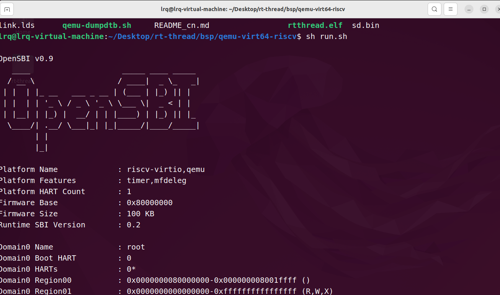

rtt
1.描述适配RT-Thread与调度相关的主要的API有哪些？这些API在哪些场景会使用？
移植RT-Thread新的内核的过程中，为了能让各个线程正常地调度，需要对于该内核重写/libcpu中定义的以下API：
(1)上下文切换函数：
1 | //没有来源线程的上下文切换，在调度器启动第一个线程的时候调用，以及在 signal 里面会调用 |
(2)全局中断控制：调度器依赖全局中断的开关来保证临界区的安全，需实现以下API：
1 | //关闭全局中断 |
(3)线程栈初始化：初始化线程栈结构，构造首次运行的上下文（如入口函数地址、参数、返回地址等），在创建/初始化一个线程时使用
1 | rt_uint8_t *rt_hw_stack_init(void *tentry, void *parameter, rt_uint8_t *stack_addr, void *texit); |
2.描述上下文切换的过程？以RISC-V为例。
上下文的切换可以分为：线程与线程之间的上下文切换与中断与线程之间的上下文切换两类，它们的切换过程有一定的区别：
(1)线程与线程之间的上下文切换过程：
在线程上下文中，如果调用rt_hw_context_switch()，则将发生上下文的切换，其具体步骤如下（以单核RV32E架构的CPU为例分析）：
1 | # libcpu/risc-v/common/context_gcc.S |
当前线程上下文的保存：
为当前线程的线程栈分配空间，并更新当前线程的TCB的
sp指针将当前线程的
ra寄存器的值保存到此线程的线程栈中读取
mstatus寄存器的MIE位，检查中断的开启状态- 如果开了中断（mstatus.MIE=1），则把立即数0x80加载到a0寄存器
- 没开中断的话直接继续往下运行
将
mstatus寄存器的MIE位和剩余通用寄存器压入线程栈
恢复目标线程上下文
- 切换CPU的
sp指针指向目标线程的线程栈 - 恢复
mepc和ra寄存器的值 - 设置
mstatus寄存器的值，其中MPP位为11，即返回时特权等级为M-mode - 恢复通用寄存器
- 释放当前线程栈的部分空间
- 通过
mret返回，根据MPP恢复特权等级，跳转到mpec继续执行
- 切换CPU的
(2)中断与线程之间的上下文切换过程：
- 在中断上下文中，调用
rt_hw_context_switch_interrupt()来触发上下文的切换，在其内部设置好rt_interrupt_from_thread和rt_interrupt_to_thread以及rt_thread_switch_interrupt_flag，然后通过rt_trigger_software_interrupt触发软中断 - 当当前中断结束后，在软中断的中断处理函数
SW_handler中，如果上下文切换的标志位rt_thread_switch_interrupt_flag为1，则进行上下文的切换：- 保存
mepc寄存器到当前线程的线程栈中 - 将CPU的
sp切换到目标线程的线程栈 - 从目标线程的线程栈中恢复
mpec、ra以及各个通用寄存器 - 设置
mstatus来指定mret后的特权等级 - 通过
mret返回，根据MPP恢复特权等级，跳转到mpec继续执行
- 保存
3.描述使用Kconfig的目的？
Kconfig文件通常用于构建大型项目（比如RT-Thread、Linux内核、BuildRoot…）时对其进行裁剪
Kconfig文件一般以树状形式分布在源码的各级目录，并结合配置UI界面（比如menuconfig）一起使用
在配置UI界面中完成项目的编译配置后，会得到一个.config文件，保存当前的配置选择，在RT-Thread中还会根据此文件生成一个rtconfig.h的文件，后续编译的时候，根据用户配置来进行条件编译或宏展开，从而达到项目裁剪的目的
4.描述Scons构建工具的作用？RT-Thread是如何使用的？
SCons是一个类似于Make的代码构建工具，它通过解析Python脚本（SConstruct、SConscript）来进行用户指定的构建行为
RT-Thread对于每个BSP项目，通过以下3类文件进行编译配置：
SConstruct：一个BSP项目只有一个，它是SCons的入口脚本，初始化了SCons构建RT-Thread所需的必要环境SConscript：一个BSP项目的中会有多个，通常每级子目录都会有一个，控制当前级别下的源码构建行为rtconfig.py：控制SCons构建的配置文件，存放了如工具链，构建参数等配置
5.玄铁的内核有哪几类？是否使用过玄铁的RISC-V内核的芯片或者其他RISC-V内核的芯片？
玄铁的内核有3大类，它们主要使用RISC-V ISA或玄铁自制的C-SKY ISA
- C系列：面向高性能计算场景，支持AI加速和复杂任务处理
- E系列：面向嵌入式MCU场景，低功耗、高能效
- R系列：面向工控、车载等高性能、高可靠性场景
之前没有使用过RISC-V内核的芯片。但查了下资料，了解到现在有不少SoC厂商使用了玄铁设计的RISC-V内核，比如全志的D1用了玄铁C906内核、酷芯的AR8032S使用了玄铁E906…
除了玄铁，现在市面上也有一些别的CPU内核是RISC-V ISA的，比如GD32所使用的bumblebee、CH32使用的青稞…
6.尝试编译RT-Thread现有支持的一款RISC-V内核的BSP(能运行更佳/或使用QEMU运行)，基于上述谈谈自己对适配一款新内核至RT-Thread的的想法？
参考rt-thread/bsp/qemu-virt64-riscv/README_cn.md at master · RT-Thread/rt-thread在qemu-virt64-riscv平台上成功运行了RT-Thread
适配RT-Thread至一款新的CPU内核，我的想法如下：
- 首先硬件上得有一款用了该内核的SoC/MCU以及对应开发板，或者有个用了该内核的qemu，针对此开发板或qemu（在玄铁的github上找到了它们针对玄铁内核的QEMU，不知道是不是用这个），在
/bsp目录下新建目录 - 接着我们需要实现硬件抽象层的代码的适配，比如
/libcpu中对于上下文切换、中断处理相关的代码。对于RISC-V ISA来说，/libcpu/risc-v/common/中已经提供了通用的实现，通常可以直接复用，但是如果新的内核对于指令集做了些扩展，引入了新的寄存器，那么可能需要针对该内核修改一下上下文切换之类的汇编代码 - 接着需要对该SoC的外设驱动进行适配，比如串口、GPIO…
- 接下来需要完成构建系统的适配，在
/bsp/new_soc下创建SConstruct、各级SConscript、KConfig等文件 - 最后进行内核镜像的编译、烧录并进行测试